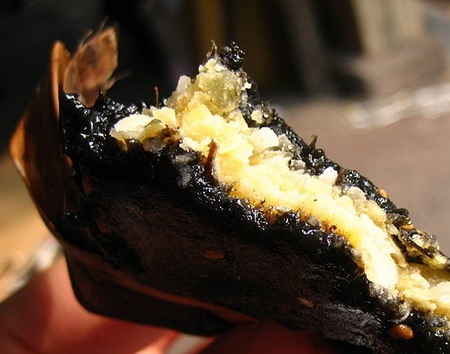

làng Đại Đồng – xã Tân Hòa – huyện Vũ Thư có thể được coi là quê hương của những món ăn dân dã, nhưng không kém phần độc đáo như bún ốc, bánh dẻo, bánh ú, bánh tráng, riêng bánh gai đã trở thành đặc sản. Bánh gai nơi đây đã có trên dưới 400 năm.